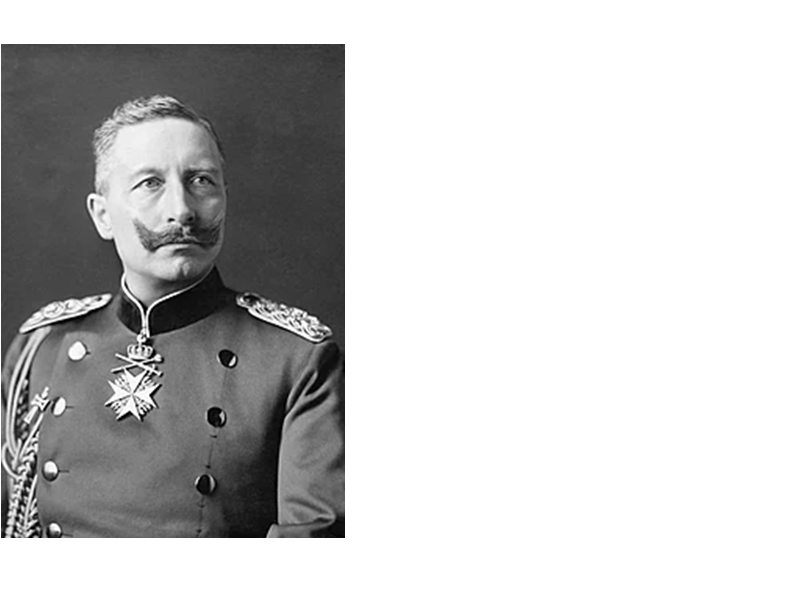
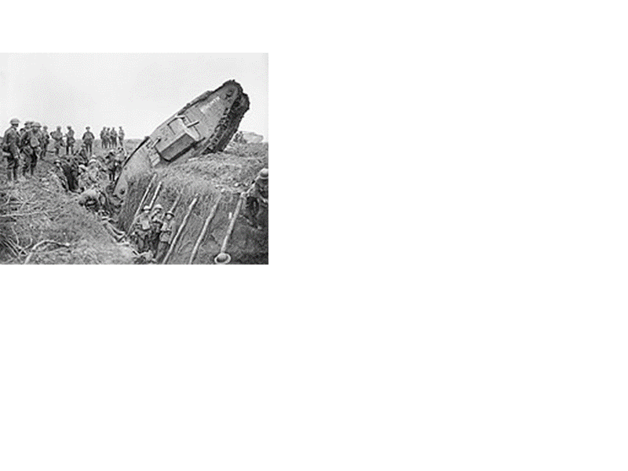

Kaiser Wilhelm II wurde am 27. Januar 1859 geboren und war der letzte deutsche Kaiser und König von Preußen. Durch einen Geburtsfehler war sein linker Arm verkrümmt. Im Dreikaiserjahr 1888 wurde er gekrönt, nachdem sein Vater und Friedrich III im gleichen Jahr gestorben waren. Er entließ 1990 Bismarck und hatte eine Vorliebe für Prunk und das Militär. Er führte das Dreiklassen Wahlrecht ein: Die Stimmen wurden je nach gezahlter Steuer gewichtet. Mehr Steuern bedeuteten mehr Einfluss. Dann begann der erste Weltkrieg, der für die Deutschen verloren ging. Der Kaiser musste abdanken und ging nach Holland ins Exil. Er verstarb am 4. Juni 1941.
Willhem II.:
Der Erste Weltkrieg begann 1914 und endete 1918. Europa, im Nahen Osten, Afrika, Ostasien und auf den Ozeanen waren betroffen. Etwa 17. Millionen Menschen verloren durch ihn ihr Leben. Der erste Weltkrieg begann am 28. Juli 1914 mit der Kriegserklärung von Österreich-Ungarn an Serbien, der das Attentat von Sarajevo vom 28. Juni 1914 und die dadurch ausgelöste Julikrise vorausgegangen waren. Der bewaffnete Konflikt endete mit einem Waffenstillstand von Compiègne am 11. November 1918. Die Wichtigen Kriegsbeteiligten waren das Deutsche Kaiserreich, Österreich-Ungarn, das Osmanische-Reich und Bulgarien sowie Frankreich, Großbritannien und sein Britisches Weltreich, Russland, Serbien, Belgien, Italien, Rumänien, Japan und die USA andererseits. 40 Staaten beteiligten sich am umfassendsten Krieg der Geschichte, insgesamt standen annähernd 70 Millionen Menschen unter Waffen.
eine Front im ersten Weltkrieg:
© 2021 - Klasse 8B1 der Bertha von Suttner Schule in Mörfelden Walldorf | Artikel by Ron | Developed by Daniel & Linus